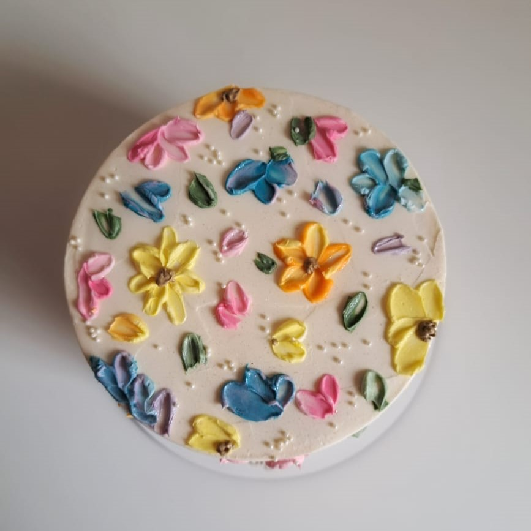

El risotto es uno de los platos italianos más conocidos a nivel internacional. ¡Casi tanto como la pasta! De hecho podríamos decir que en el país de la bota, el risotto se sirve como primer plato, como alternativa a la pasta o a los platos de cuchara, aunque no es extraño que se sirva también como plato único.
La palabra risotto viene de riso, que es arroz en italiano. Por eso, el risotto se ha asociado tradicionalmente al norte de Italia, a las regiones de Piemonte, Lombardia y Veneto, que son las regiones productoras de arroz. Pero ahora ya está extendido a todo el país… ¡y casi a todo el planeta!
Receta Risotto de hongos
Ingredientes
- Cebolla 1 unidad (120 g)
- Puerro 1 unidad (60 g)
- Dientes de ajo 3 unidades (15 g)
- Naranja 1 unidad
- Hongos secos (de pino) 100 g.
- Hongos frescos (champignones, portobellos) 300 g.
- Agua 1,5 litro
- Aceite 2 cdas. (30 cc)
- Arroz tipo Arborio o Carnaroli 350 g.
- Vino blanco ½ vaso (125 cc)
- Pimienta negra ¼ cdita.
- Perejil fresco
- Queso parmesano 75 g.
- Manteca 75 g..


Ir a Potrero Digital
Preparación
Tiempo de preparación:20 minutos
- Hidratá los hongos secos en jugo de naranja por media hora. Una vez pasado ese tiempo picalos en trozos grandes. Picá la cebolla, el puerro y los ajos en trozos pequeños.
- Limpiá los hongos frescos (champiñones y portobellos) con una servilleta de papel y luego cortalos en láminas.
- Prepará el Caldo disolviéndolo en agua hirviendo.
- En una sartén a fuego bajo con un poco de aceite rehogá las verduras picadas por 10 minutos hasta que estén blancas y algo transparentes. Agregá los hongos secos ya hidratados y cortados, integralos y de inmediato añadí el arroz.
- Mezclá el arroz junto a las verduras y añadí el vino blanco, dejá que se evapore el alcohol cocinándolo unos 5 minutos y agregá de a poco el caldo caliente. No te pases de líquido, no deben quedar las verduras "nadandon en él", pero tampoco debe estar muy seco.
- Remové constantemente a fuego suave y a medida que el líquido se evapore agregá más caldo. Cociná 15 minutos y pasado ese tiempo incorporá los hongos frescos. Seguí removiendo a fuego suave por unos 3 minutos más.
- Retirá la preparación del fuego y agregá la manteca fría cortada en cubos y el queso parmesano rallado. Mezclá todo hasta integrar bien y condimentá con Pimienta Negra Molida y Perejil Deshidratado. El resultado final deberá ser un arroz bien cremoso.
Nuestros productos
